As part of MuleSoft's commitment to trust and helping our customers improve their security posture, the multi-factor authentication (MFA) requirement changed some of the processes. One of those is publishing assets to Exchange. This codelab will show you how to create a Connected App and setup Maven and your project to publish a connector to Exchange.
Login in to Anypoint Platform and click on Access Management
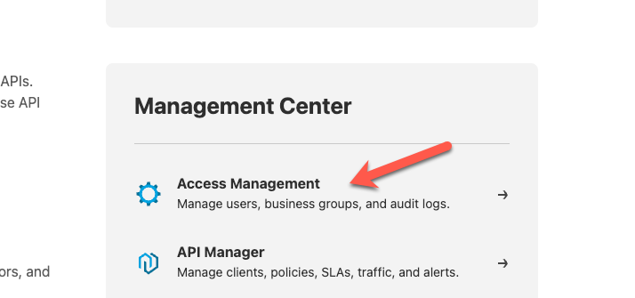
In the left-hand navigation bar, click on Connected Apps
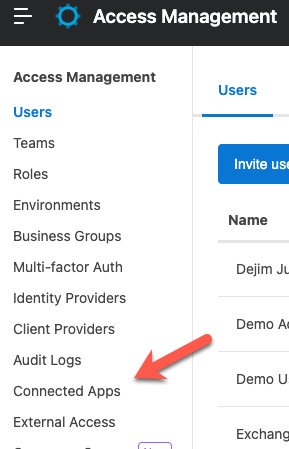
Click Create app
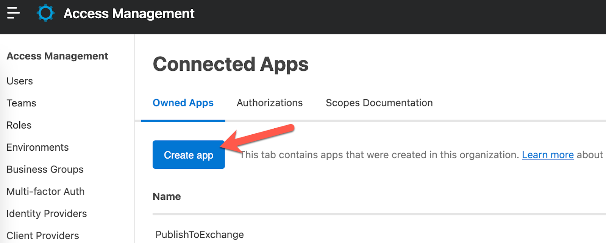
Give your app a name (e.g. PublishToExchange) and click on the radio button for App acts on its own behalf (client credentials) and then click on Add Scopes
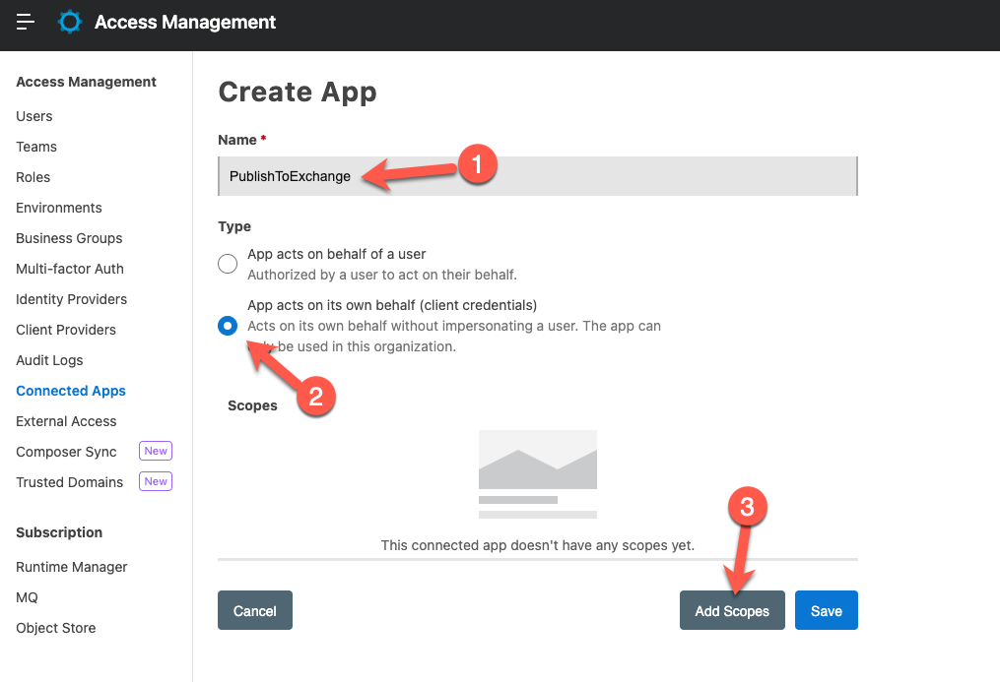
In the search box, type in "exchange" and then click on Select all or click on each scope individually until all of them are selected. Click on Next to move to the next window.
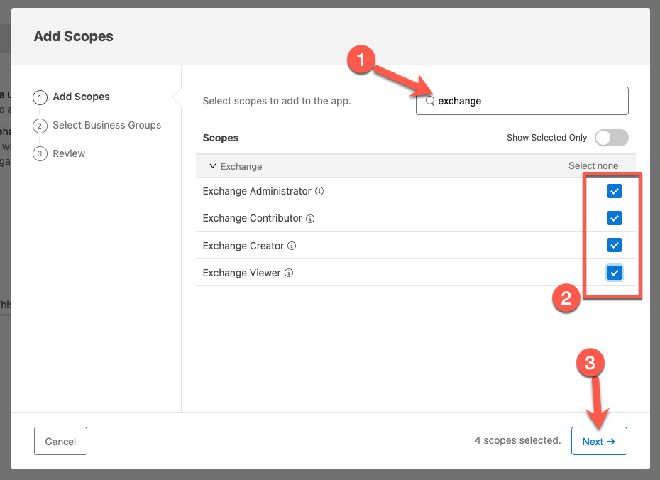
You can select all or just one of the Business Groups and then click on Next
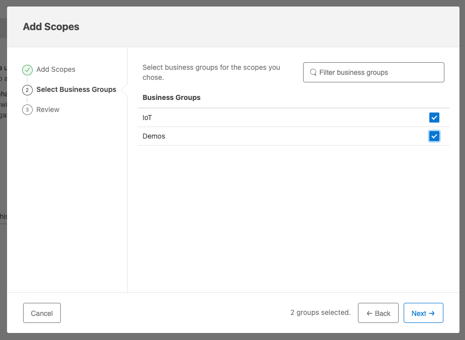
Click on Add Scopes to finish setting up the scopes.
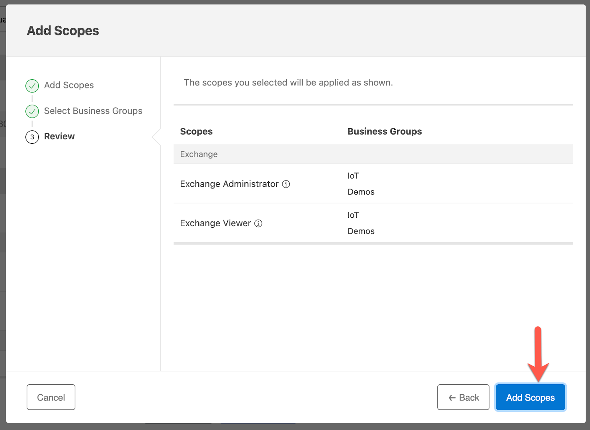
Click on Save
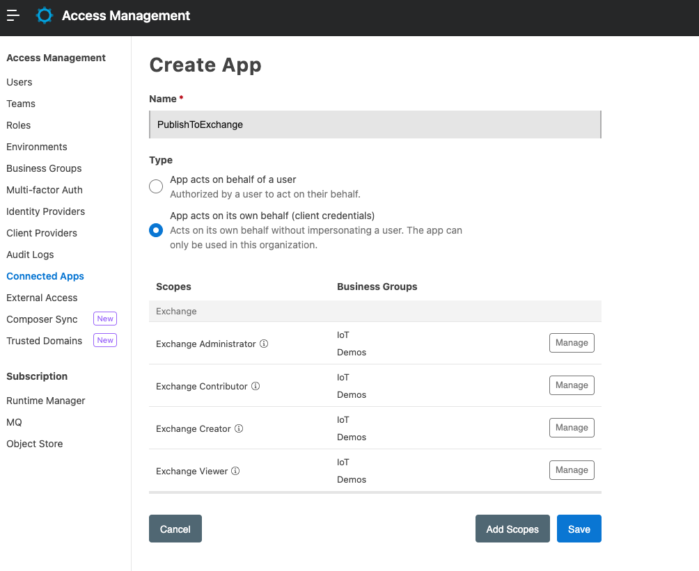
Click on Copy Id and Copy Secret and paste them into a text editor. We're going to need them in the next step.
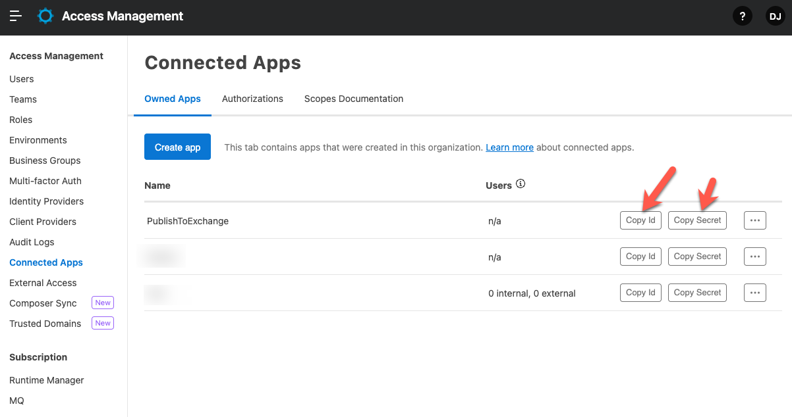
Id | da6045afeb0c48e89bb456930624b7d8 |
Secret | 503d7456a84c4419Af7f4401Cd7547dd |
Now that we've created the Connected App and we have the Client ID and Secret, we need to modify Maven and add the credentials to the settings.xml file.
You can find the settings.xml file in your Maven .m2 directory. The directory is ~/.m2 on macOS or Linux and
Find the <servers> section and add a new server.
<servers>
.
.
<server>
<username>~~~Client~~~</username>
<password>[Client ID]~?~[Client Secret]</password>
<id>anypoint-exchange</id>
</server>
.
.
</servers>As you can see above, you define the username as ~~~Client~~~ and the password as clientID~?~clientSecret. Replace clientID with the client ID. Replace clientSecret with the client secret from the previous step.
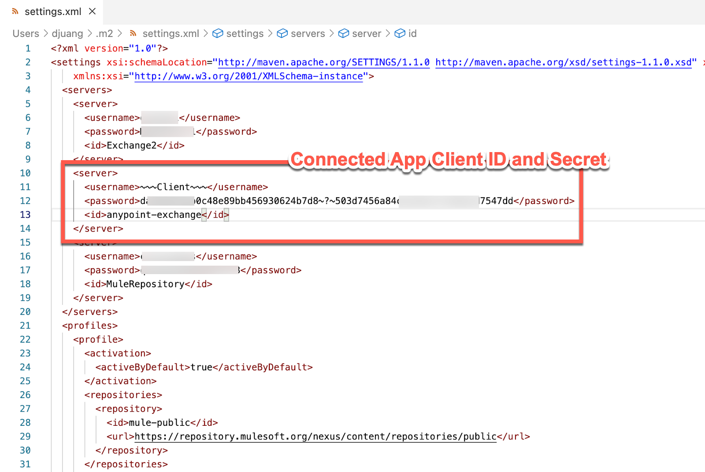
With the credentials for the Connected App set now, we need to configure the connector to leverage them in order to publish the project to Exchange using the Anypoint Exchange Maven Facade API version 3.
There are a couple edits that need to be made to the pom.xml file in your project. The first is the <groupId>. This should be set to the Anypoint Organization where you are planning to publish the connector to. You can find instructions on how to get the Organization ID here.
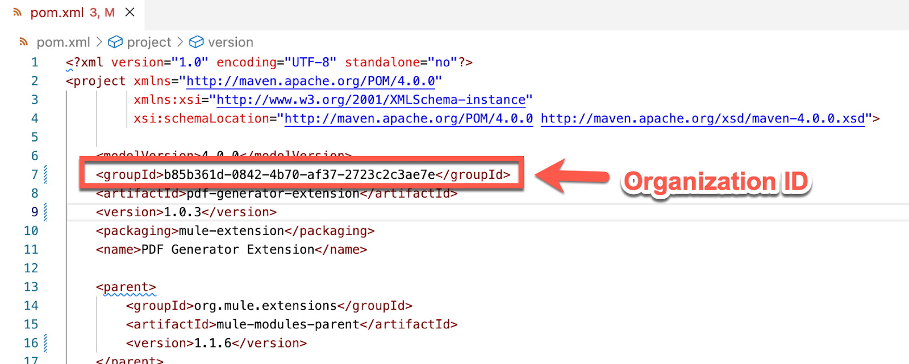
Also, if there isn't a <distributionManagement> section, add the following below. This will point to your Anypoint Exchange. You can see the reference to ${project.groupId} which we just added above.
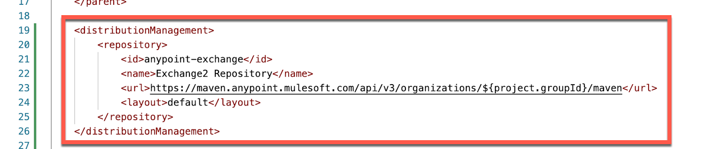
<distributionManagement>
<repository>
<id>anypoint-exchange</id>
<name>Exchange2 Repository</name>
<url>https://maven.anypoint.mulesoft.com/api/v3/organizations/${project.groupId}/maven</url>
<layout>default</layout>
</repository>
</distributionManagement>The <repositories> and <pluginRepositories> are next. Be sure the <id> matches the <id> in the settings.xml file and the <repository> in the <distributionManagement> section above. This leverages the credentials for the Connected App.
<repositories>
<repository>
<id>anypoint-exchange</id>
<name>Corporate Repository</name>
<url>https://maven.anypoint.mulesoft.com/api/v3/maven</url>
<layout>default</layout>
</repository>
</repositories>
<pluginRepositories>
<pluginRepository>
<id>mulesoft-releases</id>
<name>mulesoft release repository</name>
<layout>default</layout>
<url>http://repository.mulesoft.org/releases/</url>
<snapshots>
<enabled>false</enabled>
</snapshots>
</pluginRepository>
</pluginRepositories>The last section to add to the pom.xml file is exchange-mule-maven-plugin plugin. The latest version of this plugin is 0.0.13. You can see the snippet below.
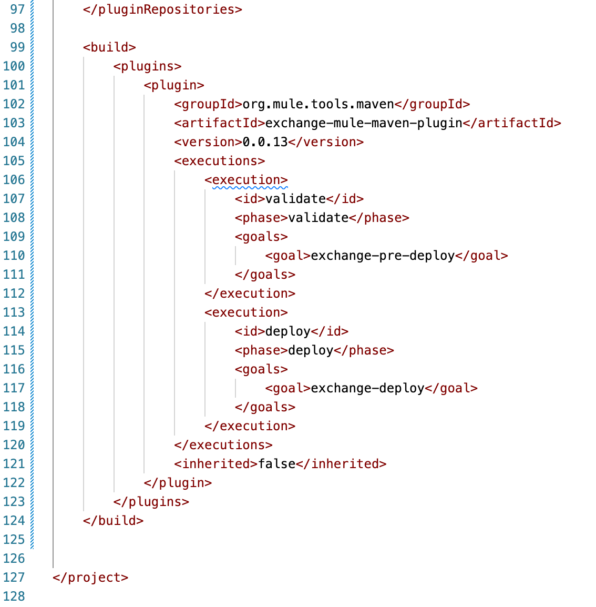
<build>
<plugins>
<plugin>
<groupId>org.mule.tools.maven</groupId>
<artifactId>exchange-mule-maven-plugin</artifactId>
<version>0.0.13</version>
<executions>
<execution>
<id>validate</id>
<phase>validate</phase>
<goals>
<goal>exchange-pre-deploy</goal>
</goals>
</execution>
<execution>
<id>deploy</id>
<phase>deploy</phase>
<goals>
<goal>exchange-deploy</goal>
</goals>
</execution>
</executions>
<inherited>false</inherited>
</plugin>
</plugins>
</build>With the settings.xml and pom.xml file updated, we can run the following command at the command line to build and deploy the connector to Exchange.
mvn clean deployIf everything was set up correctly, you should see the following output in your console window.
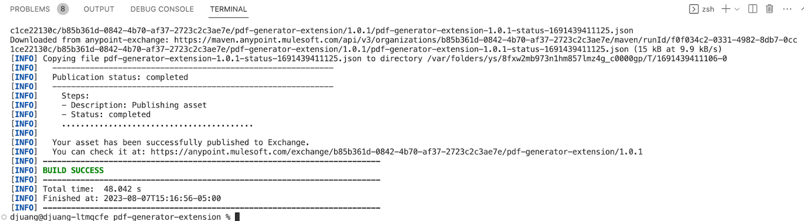
Setting up a Connected App to publish a connector to Exchange adds an extra layer of security and meets the MFA requirements of the Anypoint Platform. You can read more with the resources below.